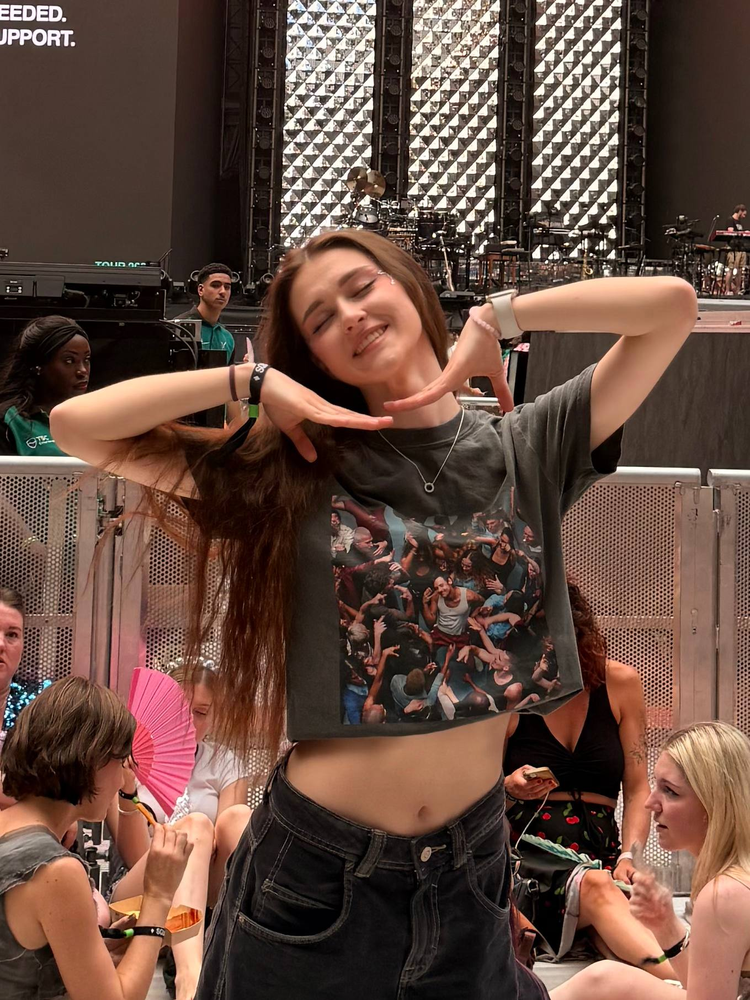
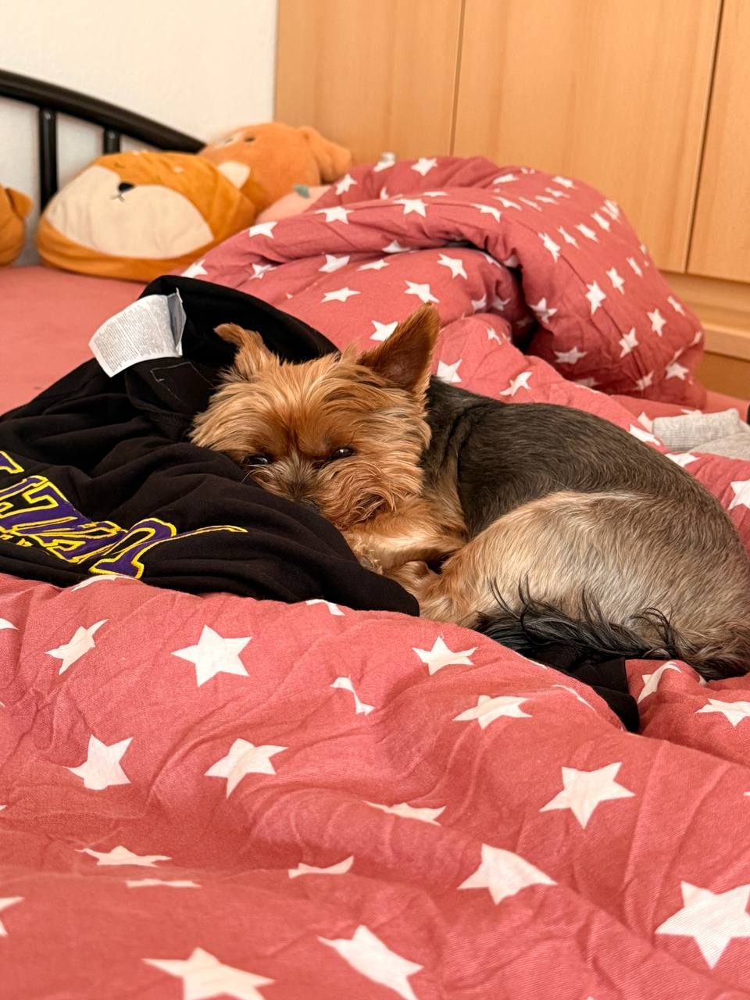
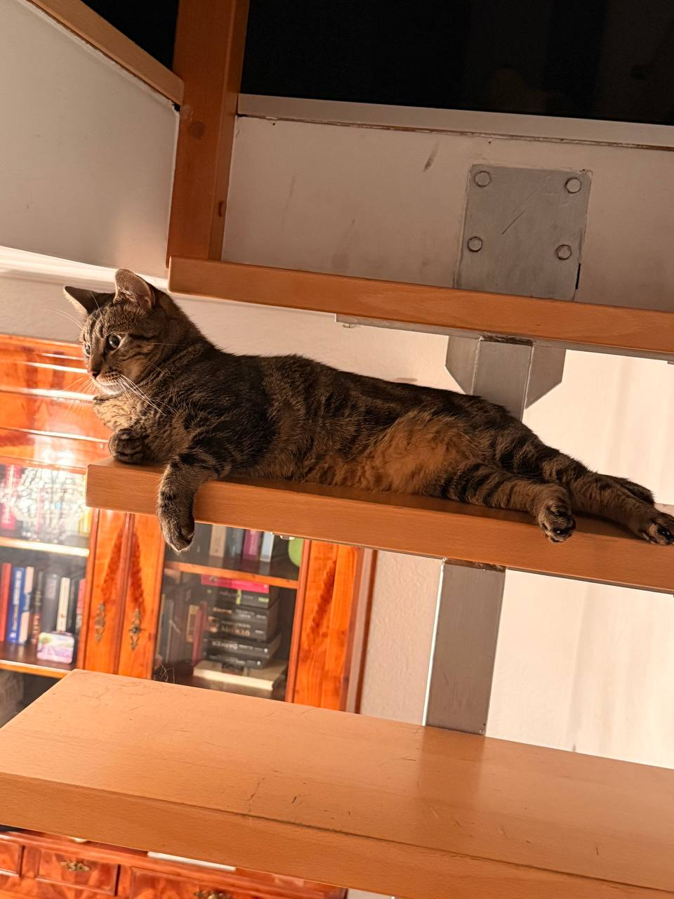
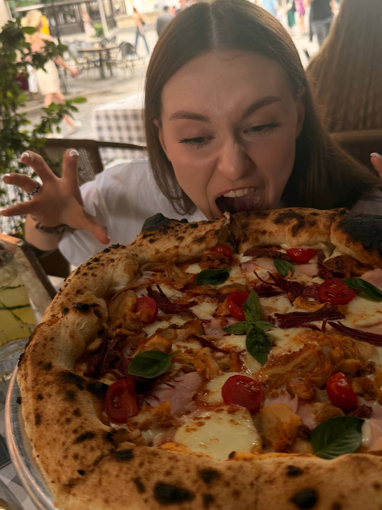
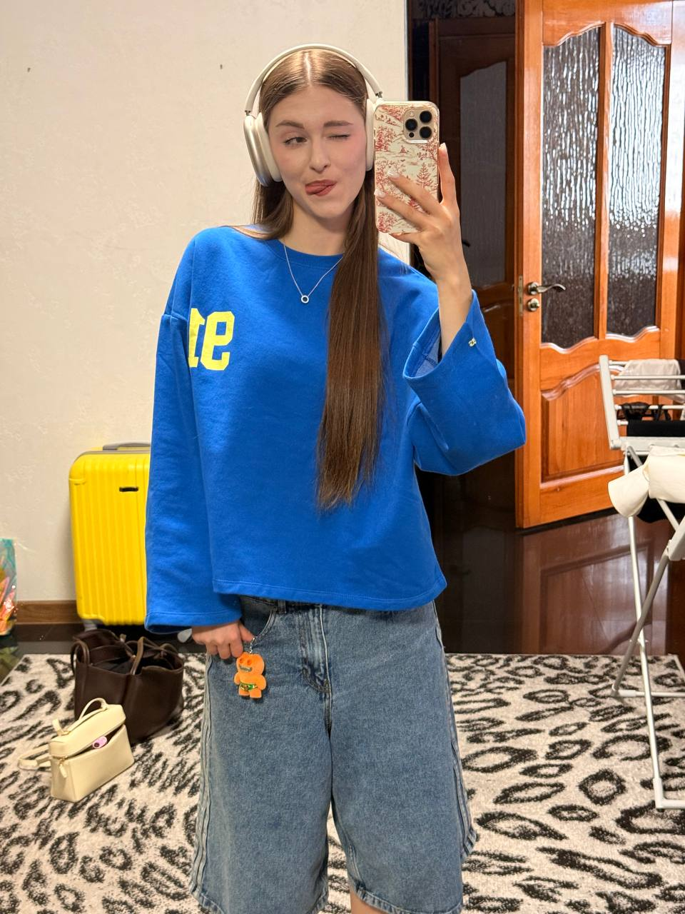
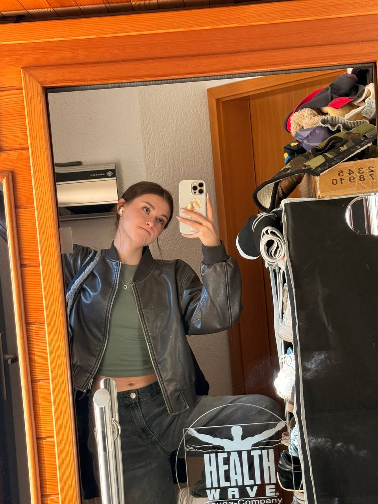

Музика й концерти
Harry Styles, 5 Seconds of Summer, sombr та The Weeknd. Особлива атмосфера концертів — окрема любов.
МОЯ МАЛЕНЬКА ІСТОРІЯ
Трохи про моє життя, улюблені речі та моменти, які хочеться пам’ятати.
Трохи про менеРада бачити тебе тут ♡

justКІЛЬКА СЛІВ ПРО СЕБЕ
Я навчаюся на маркетолога, працюю та намагаюся знаходити час для того, що приносить мені задоволення. Люблю відкривати нові місця, відвідувати концерти улюблених виконавців і збирати моменти, до яких приємно повертатися.
ТЕ, ЩО РОБИТЬ МЕНЕ МНОЮ
Harry Styles, 5 Seconds of Summer, sombr та The Weeknd. Особлива атмосфера концертів — окрема любов.
Нові міста, красиві місця й спогади, які залишаються зі мною надовго.
Колекціоную фігурки Skullpanda — кожна з них має свій особливий настрій.
Ходжу до тренажерного залу та знаходжу час для себе серед щоденних справ.
НАЙМИЛІША ЧАСТИНА МОГО ЖИТТЯ
У мене є собака Веня та кіт Лютик. Вони додають у мої будні багато тепла, веселих моментів і, звісно, фотографій у телефоні.


ПАСПОРТ МОЇХ СПОГАДІВ
Країни, у яких я вже побувала. І це, сподіваюся, далеко не останні!
МАЛЕНЬКІ РЕЧІ — ВЕЛИКІ СПОГАДИ
Концерти, подорожі, друзі та звичайні дні, які стали особливими.



ДЯКУЮ, ЩО ЗАВІТАВ/ЗАВІТАЛА
Попереду ще багато місць, музики та моментів, які варто зберегти.
На початок сторінки ↑